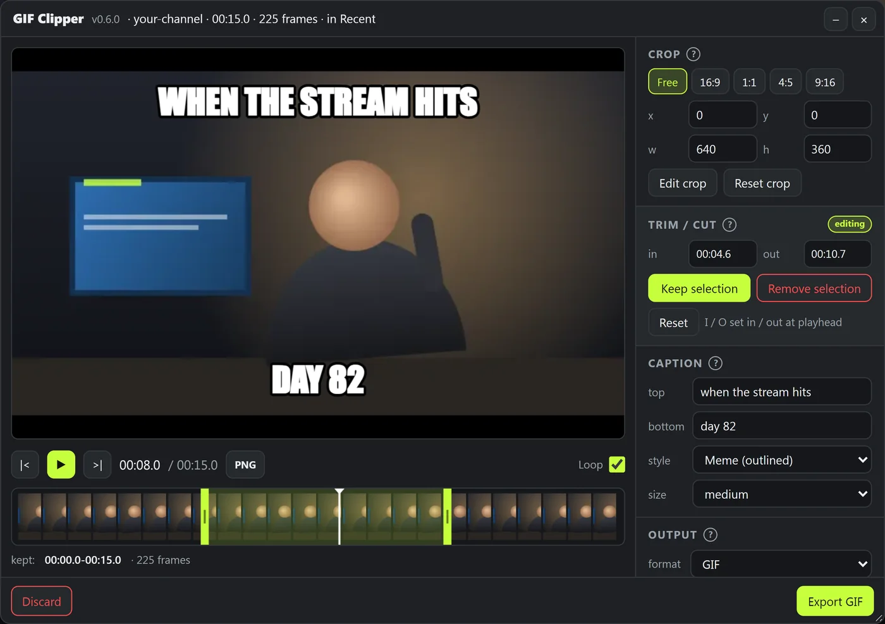
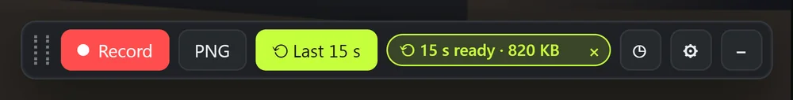
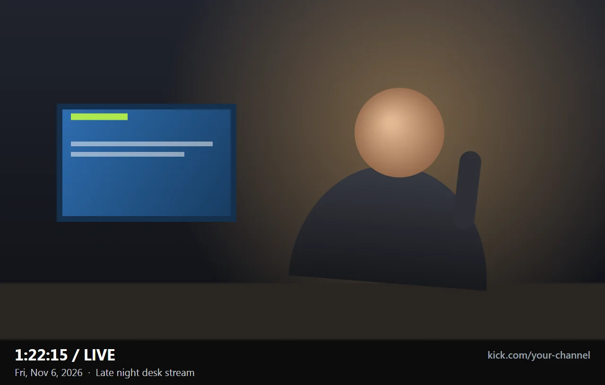

Clip the moment while it's still live.
A free add-on for kick.com. Record, or grab the last 15 seconds after something happens. Trim, crop and caption it, then save a GIF, a WebM video, or a single frame as a PNG. Nothing leaves your computer.
Needs a desktop browser with the free Tampermonkey extension. If Install shows a page of code instead of an install screen, Tampermonkey isn't installed yet.
Already have it? Click Install again and Tampermonkey offers the update to v0.6.0.

From stream to file
Everything happens on the Kick page you're already watching. The stream keeps playing while you work.
Catch the moment
A small launcher sits in the corner of the player. Press Record, then Stop, and the editor opens with your clip.
Missed it? Turn on the rewind buffer once, and Last 15 s grabs what already happened. It holds the last 10, 15 or 30 seconds, your pick.

Shape it
- Trim and cut
- Drag the green handles to keep the good part, or cut a slow bit out of the middle.
- Crop
- Draw a box on the preview, or lock it to 16:9, square, 4:5 or 9:16.
- Captions
- Top and bottom text, meme style or subtitles. The preview shows exactly what you'll get.
- Boomerang
- Plays forward, then backward, so the loop never jumps.
Save it
- GIF, WebM, or bothGIF plays anywhere. WebM is a real video file with full colour and a much smaller size.
- A size limitPick 5, 8, 10 or 25 MB and the export shrinks the file until it fits your chat app.
- A single frame as PNGOne click or Alt + Shift + S. A slim bar under the picture records where it came from: the time, the date and the stream title.
- Recent clipsYour last 5 clips stay in your browser with their edits, so a reload doesn't lose one.

Set up
GIF Clipper is a userscript: a small add-on that runs on kick.com inside the Tampermonkey extension.
Add Tampermonkey
The free extension for Chrome, Edge, Firefox or Brave.
Install GIF Clipper
Click Install GIF Clipper above, then Install on the screen Tampermonkey opens.
Open a live channel
The launcher appears in the corner of the player once the video plays.
Shortcuts
They all need Alt, so they never fire while you're typing in chat. Change them in the launcher's gear menu.
| Keys | What it does |
|---|---|
| Alt + Shift + R | Start or stop recording |
| Alt + Shift + L | Clip the last 15 seconds (turns the rewind buffer on the first time) |
| Alt + Shift + S | Save the current frame as a PNG |
| Alt + Shift + G | Show or hide the launcher |
| Space, ← →, I / O | In the editor: play or pause, step one frame, set the start or end at the playhead |
Questions
Is it free? Does it upload anything?
Free, and nothing is uploaded. The add-on reads the video already playing in your tab and builds the file on your computer. There's no account and no server.
Does it work on my phone?
No. Tampermonkey is a desktop browser extension, so you need Chrome, Edge, Firefox or Brave on a computer.
Why is my GIF so big?
GIF is an old format, and moving camera footage is hard to squeeze into it. Set a size limit, lower the width or fps, crop tighter, or save a WebM instead, which is a fraction of the size for the same clip.
The launcher says "no player on this page"
The stream hasn't started in your tab yet. That's usually an offline channel, or a mature channel still showing its "I am 18+" screen. Once the video plays, the launcher wakes up.
Why are a few seconds missing from my clip?
Browsers slow down tabs you aren't looking at. Keep the tab visible while recording; if you switch away, the launcher tells you and those seconds are skipped.
How do updates work?
Tampermonkey checks this page's copy of the add-on and updates it by itself, usually within a day. To update right away, click Install again.
What's new
- 0.6
- Works inside embedded Kick players (player.kick.com), so the launcher shows up on pages such as Stumble. Click the player once so the shortcuts reach it.
- 0.5
- PNG info bar under each snapshot with the time, date and stream title. The launcher also stopped changing width while recording.
- 0.3 & 0.4
- Save a frame as a PNG with one click or Alt + Shift + S, stamped with the stream time.
- 0.2
- WebM export, size limits, captions, boomerang loops and Recent clips.
- 0.1
- First release: record or rewind, trim, cut, crop and GIF export.